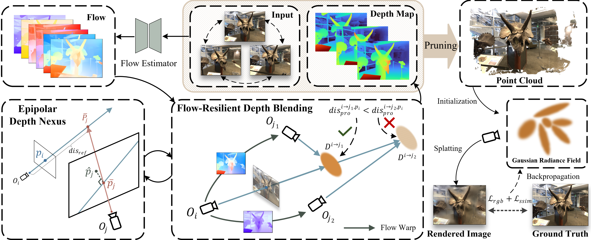

Neural Radiance Field (NeRF) and 3D Gaussian Splatting (3DGS) have noticeably advanced photo-realistic novel view synthesis using images from densely spaced camera viewpoints. However, these methods struggle in few-shot scenarios due to limited supervision. In this paper, we present NexusGS, a 3DGS-based approach that enhances novel view synthesis from sparse-view images by directly embedding depth information into point clouds, without relying on complex manual regularizations. Exploiting the inherent epipolar geometry of 3DGS, our method introduces a novel point cloud densification strategy that initializes 3DGS with a dense point cloud, reducing randomness in point placement while preventing over-smoothing and overfitting. Specifically, NexusGS comprises three key steps: Epipolar Depth Nexus, Flow-Resilient Depth Blending, and Flow-Filtered Depth Pruning. These steps leverage optical flow and camera poses to compute accurate depth maps, while mitigating the inaccuracies often associated with optical flow. By incorporating epipolar depth priors, NexusGS ensures reliable dense point cloud coverage and supports stable 3DGS training under sparse-view conditions. Experiments demonstrate that NexusGS significantly enhances depth accuracy and rendering quality, surpassing state-of-the-art methods by a considerable margin. Furthermore, we validate the superiority of our generated point clouds by substantially boosting the performance of competing methods.

Given a few input images, our method first computes depth using optical flow and camera poses at the Epipolar Depth Nexus step. We then fuse depth values from different views, minimizing flow errors with flow-resilient depth blending. Before forming the final dense point cloud, outlier depths are removed at the flow-filter depth pruning step. In training, we do not need depth regularization, thanks to the embedded epipolar depth prior in the point cloud.